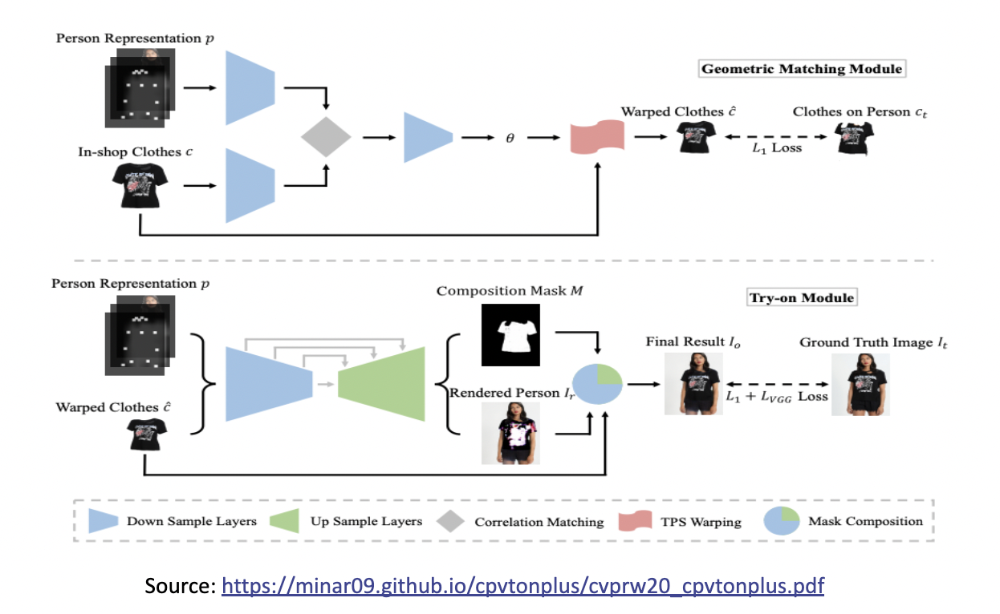

Style-based Global Appearance Flow For Virtual Try-On Progress
Introduction
In the realm of retail customization and the improvement of the overall customer experience, virtual mirrors are quickly becoming the focal point. It is essentially a classic mirror with a display hidden behind the glass that covers it. These mirrors are equipped with computer vision cameras and augmented reality technology, which enables them to show a wide variety of contextual information. As a result, shoppers are able to connect with the brand in a more meaningful way. This machine learning-based engine provides its users with real-time fashion recommendations by studying their present clothes and drawing conclusions from those observations. The goal of an image-based virtual try-on is to drape a garment from an in-store rack over a digital representation of a person who is already dressed. The garment warping process, which involves aligning the target clothing with the relevant body components in the person's image, is an essential stage in the process of accomplishing this goal. The earlier methods typically utilized a model for estimating the flow of a local appearance. Because of this, they are inherently prone to challenging body positions or occlusions as well as substantial misalignments between the images of the person and the garments. In order to get over this limitation, our team came up with the notion of proposing a fresh global appearance flow estimation model for this project. For the first first time, an architecture based on a StyleGAN has been selected for use in appearance flow estimation. Because of this, we are able to make use of a global style vector to encapsulate the context of the entire image, which helps us deal with the difficulties discussed before. A flow refinement module that adds local context has been developed and implemented in order to direct the StyleGAN flow generator to focus greater attention on the local garment deformation. A VTON model's job is to make a customer seem good in the clothes they sell in the store. One of the most important goals of a VTON model is to correctly connect the clothing being tried on in the store with the relevant body components in the image of the person being modeled. This is because the clothing being tried on in the store is typically not spatially aligned with the image of the person being tried on. Directly applying the advanced detail-preserving images to image translation models to fuse the texture in the person image and garment image will result in unrealistic effects in the generated try-on image, especially in the regions that are occluded and misaligned. This is because spatial alignment is not being used.


About Model
An overview of CP-VTON, containing two main modules. (a) Geometric Matching Module: the in-shop clothes c and input image representation p are aligned via a learnable matching module. (b) Try-On Module: it generates a composition mask M and a rendered person Ir. The final results Io is composed of warped clothes c and the rendered person Ir with the composition mask M.
Looking at failures of CPVITON we focused on improving GMM and Try-module. The improvement of the GMM stage is in three aspects. First, it is crucial to obtain the complete target body silhouette area from the target human image. However, in the VITON dataset, the neck and bare chest area is wrongly labeled as background, and the body shape is often distorted by hair occlusion. Thus we added A new label ‘skin’ is added to the label set, and then the label of the corresponding area is restored from the wrong label, ‘background’, considering the original human image and joint locations. The skin-labeled area is now included in the silhouette in the human representation. To recover the hair occlusion over the body, first, the hair occlusion areas are identified as the intersection of the convex contour of the upper clothing and the hair-labeled area, and the intersections are re-labeled as upper cloth.
Second, the CP-VTON GMM network is built on CNN geometric matching and uses a pair of color images, CP-VTON GMM inputs are binary mask information, silhouette, joint heatmap, and the colored try-on clothing. Since the colored texture from try-on clothing does not help in the matching process, our GMM uses a clothing mask MCi instead of colored Ci
In conclusion, the experiments conducted using the currently available techniques demonstrate that warped clothing frequently exhibits severe distortion. This can be seen very clearly when the garment type is a monogram, which means that it only has one color. In this case, the warping is not nearly as heavily distorted. However, when there are a variety of colors and textures present, the warping process blends the various textures, which results in an image that is distorted. Although we were unable to determine the exact cause, we are able to draw the conclusion that the estimation of the TPS parameters needs to be regularized so that it takes into account the restrictions placed on clothing textures. For the sake of easy visualization and comprehension, the regularization of our grid warping is defined on the grid deformation rather than directly on the TPS parameters. This is done in order to avoid having a warping that is too dissimilar from that of the previous and subsequent grid gaps in the equation.
To solve our third aspect, we extended the existing CP-VTON implementation as described above. We added automatic refinement for segmentation. For training, we started with a similar setting, keeping λ1 = 1 and λreg = 0.5. This allowed us to compare the results of CPVTON and CPVTON+ regularisations. We will use the Zalando dataset pair dataset for all experiments. We plan to keep the learning rate first fixed at 0.0001 for 100K steps and then linearly decay to zero for the remaining steps.

Findings
The above Table shows a numerical comparison between the baseline CP-VTON and our proposed CP-VTON+ with improvisations (GMM regularization & mask loss). The wrapping module is measured by IoU (Intersection over Union) which is now improved from 0.78 to 0.84. Due to extra labels, the Try-on results are measured by SSIM structural similarity index measure and Learned Perceptual Image Patch Similarity (LPIPS) metrics. For the same clothing retry-on cases when we have ground truths for the warping stage and the blending stage, we can see SSIM is increased to 0.8163. The original target human image is used as the reference image for SSIM and LPIPS (a lower score means better), and the parsed segmentation area for the current upper clothing is used as the IoU reference. For different clothing try-on (where no ground truth is available), we used the Inception Score (IS). Our proposed CP-VTON+ outperforms CP1 VTON on all measures.
Observation and conclusion
With the listed experiments, adding new labels (skin) gave the best results in the wrapping module. Improvement of in GMM module is noteworthy. The newly implemented module enhances the quality, although it is sometimes ineffective when used to target humans with complex postures and long-sleeved, intricately formed, or textured clothes. Warped clothes do not fit the human body, arms cover the body area, and TPS fails to conceal the warping fault are two frequent failure scenarios. Since our wrapping method is non-rigid, strong 3D deformations of clothes make 2D transforms faulty. 3D postures also cause self-occlusions. Our labels in the network should be able to distinguish between covered and bare skin, including arms. Even for straightforward positions, distorted clothing occasionally produces unnatural effects.
We proposed a refined image-based VTON system, CPVITON+ for enhancing results in the previous approach. We focused on Errors in human representation and the dataset, network architecture, and a low-cost function Even though CP-VTON+ enhances performance, we discover that a 2D image-based technique has intrinsic limits for dealing with diversely posed target human situations. As a result, the application would be confined to plain attire and standardly posed target persons. 3D reconstruction would be more appropriate for instances with more variety.
Recap of our Goals
Outfit Generation:This is nothing but for a given input person we need to replace it with the user's current interest in clothing that goes well.
Outfit Recommendation: This is notifying the user that based on these input details such as a person, occasion, color, size, etc this dress would look great. This would be done by maximizing a utility function that measures the suitability of recommendation of a fashion outfit for a specific user.
Pair recommendation: This is typically performed as a top-bottom or bottom-up recommendation. In this task, given clothes related to the upper part of the body, the aim is to predict the possible lower part and vice versa. For instance, a user has a cloth (e.g., tops) related to the upper part of the body and looks for the bottom (e.g., trousers) from a large collection that best matches the tops. This requires a collection of pairs of top and bottom images for compatibility modeling.
Fill In the Blank (FITB): To find a setting where we are given an incomplete outfit (e.g., shirt, pants) with a missing item (e.g., shoes), and the method must find the best missing fashion item from multiple choices which are compatible visually. This is a convenient scenario in real life, e.g., a user wants to choose a pair of shoes to suit his pants and jacket.
Next Steps
Working on MOVENET Dataset: We have found one more dataset which technically belongs to solve some other problem statement but we are doing some data preprocessing and augmentation steps such as removing the background, and discard irrelevant classes, and then removing images having more than one person. This new dataset is huge and we hope this will help to increase our model performance a lot. The goal of using this dataset is to make our model pose and shape invariant.
Improve Accuracy: To achieve accurate results for outfit generation is our primary target because all other goals are linked to it. So we are trying to develop a robust model.
Next Goals: After completing the ongoing tasks we will proceed to the recommendation parts which include goals 3 and 4 which are in continuation to goal 2. One good thing is we are almost at par with our expectations and the timeline we presented in our pitch last time.
We focused on training the upper outfit of the body, we will follow the same steps to train the bottom apparel.
References
[1] A Review of Modern Fashion Recommender Systems
[2] Style-Based Global Appearance Flow for Virtual Try-On
[3] A Curated List of Awesome Virtual Try-on (VTON) Research
[4] Multi-Garment: Learning to Dress 3D People from Images
Citatations
[1] S. Yang, T. Ambert, Z. Pan, K. Wang, L. Yu, T. Berg, and M. C. Lin. Detailed garment recovery from a single-view image. In ICCV, 2017
[2] Yamaguchi, M. Hadi Kiapour, and T. L. Berg. Paper doll parsing: Retrieving similar styles to parse clothing items. In ICCV, 2013.
[3] S. Liu, Z. Song, G. Liu, C. Xu, H. Lu, and S. Yan. Street-toshop: Cross-scenario clothing retrieval via parts alignment and auxiliary set. In CVPR, 2012.
[4] Y. Hu, X. Yi, and L. S. Davis. Collaborative fashion recommendation a functional tensor factorization approach. In ACM Multimedia, 2015.
[5] D. Yoo, N. Kim, S. Park, A. S. Paek, and I. S. Kweon. In ECCV, 2016
[6] I. Goodfellow, J. Pouget-Abadie, M. Mirza, B. Xu, D. Warde-Farley, S. Ozair, A. Courville, and Y. Bengio Generative adversarial nets. In NIPS, 2014
[6] A. Odena, C. Olah, and J. Shlens. Conditional image synthesis with auxiliary classifier gans. In ICML, 2017
[7] X. Han, Z. Wu, Y.-G. Jiang, and L. S. Davis. Learning fashion compatibility with bidirectional lstms. In ACM Multimedia, 2017.
[8] A. Kovashka, D. Parikh, and K. Grauman. Whittlesearch: Image search with relative attribute feedback. In CVPR, 2012.
[10] J.-Y. Zhu, T. Park, P. Isola, and A. A. Efros. Unpaired imageto-image translation using cycle-consistent adversarial networks. In ICCV, 2017
[11] C. Lassner, G. Pons-Moll, and P. V. Gehler. A generative model of people in clothing. In ICCV, 2017
[12] C. S. Zhu, S. Fidler, R. Urtasun, D. Lin, and C. L. Chen. A generative. Be your own prada: Fashion synthesis with structural coherence. In ICCV, 2017
[13] P. Guan, L. Reiss, D. A. Hirshberg, A. Weiss, and M. J. Black Drape: Dressing any person. ACM TOG, 2012
[14] M. Sekine, K. Sugita, F. Perbet, B. Stenger, and M. Nishiyama. Virtual fitting by single-shot body shape estimation. In 3D Body Scanning Technologies, 2014
[15] S. Yang, T. Ambert, Z. Pan, K. Wang, L. Yu, T. Berg, and M. C. Lin. Detailed garment recovery from a single-view image. In ICCV, 2017
[16] N. Jetchev and U. Bergmann. The conditional analogy gan: Swapping fashion articles on people images. In ICCVW, 2017.
Team Members
Jivesh Poddar, Neha Cholera, Dhruvi Gajjar